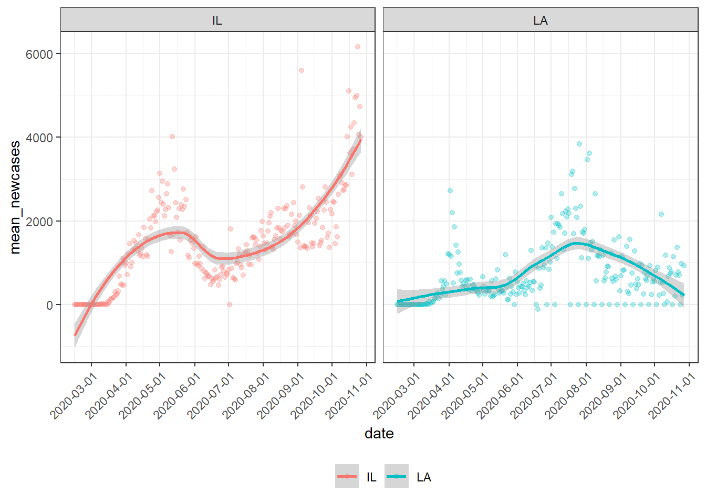
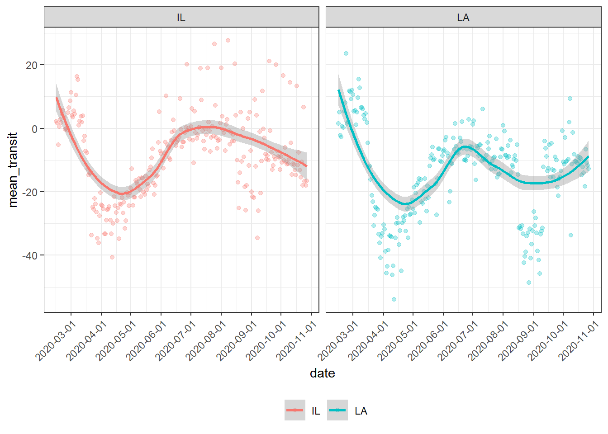

Furthermore, we tried to understand how ground transportations (subway, bus, and train) were affected by examining the changes of visits and length of stay at public transport hubs from the baseline (the median value, for the corresponding day of the week, during the 5-week period from Jan 3 to Feb 6, 2020).
#TRY to make plot about the relationship between mean_transit station percent change and date
Mean_Transit_Plot=Covid_mobility_data %>%
group_by(date,state) %>%
filter(!is.na(transit_stations_percent_change_from_baseline)) %>%
summarise(mean_transit = mean(transit_stations_percent_change_from_baseline),
mean_newcases = mean(new_case),
n = n()) %>%
ggplot(aes(x = date,y = mean_transit,color = state)) +
geom_line(alpha=0.3,size=0.3) +
scale_x_date(date_breaks = "1 month",
date_labels = '%b%d \n%Y') +
labs(
y = "average Transit Change from Baseline")
ggplotly(Mean_Transit_Plot)The graph depicts the average mobility changes in public transport hubs over time. We can see a noticeable drop in mobility from the plot since March for all states and did not completely rebound until the middle of June, which matches the trend of the COVID-19 progress.
Similar to air transportation, we graphed to see the different magnitude of changes by states.
#use plotly to compare the mean transit among each state
Covid_mobility_data %>%
group_by(state) %>%
filter(!is.na(transit_stations_percent_change_from_baseline) & new_case >0) %>%
summarise(mean_transit = mean(transit_stations_percent_change_from_baseline),
n = n()) %>%
mutate(state = fct_reorder(state, mean_transit)) %>%
plot_ly(x = ~state, y = ~mean_transit, color = ~state, type = "bar", colors = "viridis")This bar plot shows each state’s average mobility change from Feb.15 to Oct.27. The percent changes from baseline for each state are shown along the bars. We can see that most northeastern states, like Massachusetts (MA), New Jersey (NJ) and Maryland (MD) have considerable negative changes, indicating the use of ground transport in these states has decreased dramatically. While some northwestern states, such as Wyoming (WY), South Dakota (SD), and Idaho (ID), seem to have positive changes, referring to an increase in the use of ground transport.
#use plotly to compare the mean transit among each state
Covid_mobility_data %>%
group_by(state) %>%
filter(!is.na(transit_stations_percent_change_from_baseline) & new_case >0) %>%
summarise(mean_transit = mean(transit_stations_percent_change_from_baseline),
sum_new_cases = sum(new_case),
n = n()) %>%
mutate(state = fct_reorder(state, sum_new_cases)) %>%
plot_ly(x = ~state, y = ~sum_new_cases, color = ~state, type = "bar", colors = "viridis")This bar plot shows the number of total COVID-19 cases from Feb.15 to Oct.27 for each state. The graph shows that Illinois (IL), Ohio (OH), and North Caroline (NC) have the greatest number of total cases. Maine (ME), Delaware (DE), and Wyoming (WY) have the least number of total cases.
By comparing the two graphs, we hypothesized that the total number of cases is a factor in estimating ground transit mobility changes as we can see a significant drop in the use of ground transportation for states with a relatively large number of total cases, such as NJ and Louisiana (LA) and a non-decrease change for states with fewer COVID-19 cases, such as WY and ID. However, we also noticed that though the situation of COVID-19 in some states seems to be more severe than it was in other states, the usage of ground transportation in these states has been decreased less than expected. For example, IL is the state with the greatest number of total cases, but it only has moderate average mobility change among all states.
Does this mean that the association between COVID-19 and ground transportation cannot be extrapolated from one state to another? To answer this question, we took a closer look at the situation in IL and LA.
plot_ILCA_MEAN_NEWCASE =
Covid_mobility_data %>%
group_by(date,state) %>%
filter(!is.na(transit_stations_percent_change_from_baseline)& state == c("LA","IL")) %>%
summarise(mean_transit = mean(transit_stations_percent_change_from_baseline),
mean_newcases = mean(new_case),
n = n()) %>%
ggplot(aes(x = date,y = mean_newcases,color = state)) +
geom_point(alpha=0.3) +
geom_smooth()+
theme(axis.text.x = element_text(angle = 45, hjust = 1))+
scale_x_date(date_breaks = "1 month") +
facet_wrap(~state)
plot_ILCA_MEAN_NEWCASE
This panel presents the average mobility change in IL and LA from Feb.15 to Oct.27. Two plots seem to have generally similar trends with an apparent decrease begins from mid-February till mid-April. The trends then start to bounce back, and once it reaches closely to the baseline level it starts to decrease again. The one difference between these two trends is that the second drop in LA is much steeper than in IL.
plot_ILCA_MEAN_Transit=
Covid_mobility_data %>%
group_by(date,state) %>%
filter(!is.na(transit_stations_percent_change_from_baseline)& state == c("LA","IL")) %>%
summarise(mean_transit = mean(transit_stations_percent_change_from_baseline),
mean_newcases = mean(new_case),
n = n()) %>%
ggplot(aes(x = date,y = mean_transit,color = state)) +
geom_point(alpha=0.3) +
geom_smooth()+
theme(axis.text.x = element_text(angle = 45, hjust = 1)) +
scale_x_date(date_breaks = "1 month") +
facet_wrap(~state)
plot_ILCA_MEAN_Transit
This panel shows the daily confirmed case trends in IL and LA from Feb.15 to Oct.27. We see that an overall continuously increasing trend in IL. The trend tends to drop from the middle of May but back to a more rapid increase since July. On the other hand, the increase in LA is relatively gentle, and its growth stopped as it reached its peak in late July.
These plots demonstrate that the trends in daily confirmed cases and mobility changes are quite alike in LA and IL before July, showing evidence that a similar association between COVID-19 and ground transportation exist in IL as well. The primary reason that the decrease in IL’s ground transportation usage is smaller than expected might be that once the daily confirmed cases started decreasing, people started taking public transportation and failed to notice the “second wave” of increased cases.